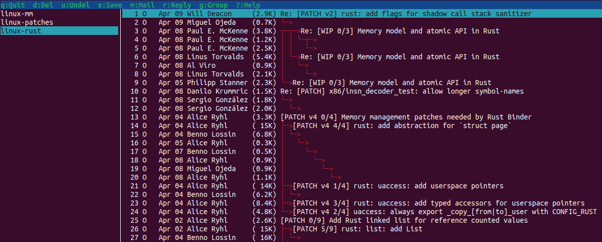

Mutt setup with Gmail labels for Linux kernel emails
2024-4-09
Content:
- Linux kernel postying style
- Setup
- mutt TUI
Linux kernel posting style
I've spent quite some time to understand how properly setup mutt for
Linux kernel development, so this post should help myself and maybe others as well.
Linux suggests a dozen of email clients, but mutt is the most popular AFAIU.
Gmail does not support bottom-posting reply -- and probably that's the biggest downside,
it does support a plain text, but it seems, has some other issues as documented in Linux.
Bottom-posting is the standard of Linux kernel emailing style.
> Avoid top-posting and favor interleaved quoting:
> https://en.wikipedia.org/wiki/Posting_style#Interleaved_style
Example of bottom-posting (prev. message's date + quoted context comes first, then your reply)
From: Sabyrzhan Tasbolatov <snovitoll@gmail.com>
To: Sabyrzhan Tasbolatov <snovitoll@gmail.com>
Subject: Re: test mutt
On Thu, Apr 04, 2024 at 01:02:23AM +0500, Sabyrzhan Tasbolatov wrote:
> On Thu, Apr 04, 2024 at 12:36:44AM +0500, Sabyrzhan Tasbolatov wrote:
> > Test 123
Hello,
I'm replying to you
--
Sabyrzhan Tasbolatov
Instead of:
From: Sabyrzhan Tasbolatov <snovitoll@gmail.com>
To: Sabyrzhan Tasbolatov <snovitoll@gmail.com>
Subject: Re: test mutt
Hello,
I'm replying to you
--
Sabyrzhan Tasbolatov
--
On Thu, Apr 04, 2024 at 01:02:23AM +0500, Sabyrzhan Tasbolatov wrote:
> On Thu, Apr 04, 2024 at 12:36:44AM +0500, Sabyrzhan Tasbolatov wrote:
> > Test 123
So mutt TUI (terminal UI) is the best, at least, I'd like to adapt to it.
After reading Greg KH post and this post and this post,
I've prepared my setup for mutt with my Gmail account mailboxes.
NB
For sending patches I use `git send-email` with all required steps
like `linux/scripts/checkpatch.pl` and `kernel/scripts/get_maintainer.pl`.
So I use mutt only for replying (perhaps I will use mutt for the initial PATCH sending as well
later but AFTER checkpatch.pl script).
Setup
1. I've subscribed to the emailing list.
> Majordomo no longer supported
> To subscribe or unsubscribe to lists, please visit
> https://subspace.kernel.org/vger.kernel.org.html
So find the interesting email list here.
2. In Gmail you can filter those emails to "labels" instead of having them
in your Primary Inbox. So for "mm-commits@vger.kernel.org" list
I'm using "linux-mm" label.
3. Install "mbsync" to sync emails from your Gmail.
3.1 This is my `~/.mbsyncrc` config file:
Create Near
SyncState *
IMAPAccount gmail
Host imap.gmail.com
User snovitoll@gmail.com
Pass XXX
SSLType IMAPS
AuthMechs LOGIN
IMAPStore gmail-remote
Account gmail
MaildirStore gmail-local
Path ~/Mail/
Inbox ~/Mail/Inbox
Subfolders Verbatim
Channel linux-mm
Far :gmail-remote:"linux-mm"
Near :gmail-local:linux-mm
Channel linux-patches
Far :gmail-remote:"linux-patches"
Near :gmail-local:linux-patches
Channel linux-rust
Far :gmail-remote:"linux-rust"
Near :gmail-local:linux-rust
Group googlemail
Channel linux-mm
Channel linux-patches
Channel linux-rust
It will sync in your `~/Mail` directory mails from linux-mm, linux-patches, linux-rust labels.
4. My `~/.mutt/muttrc` config file:
# vim: filetype=muttrc
set smtp_url = "smtp://snovitoll@smtp.gmail.com:587/"
set smtp_pass = XXX
set ssl_force_tls = yes
set folder = "~/Mail"
set spoolfile = "+linux-mm"
mailboxes +linux-mm +linux-patches +linux-rust
set imap_check_subscribed
# Don't load the primary inbox
# unset spoolfile
set editor = "vim"
set send_charset="us-ascii:utf-8"
set charset = UTF-8
set edit_headers = yes
unset use_domain
# Personal information
set realname = "Sabyrzhan Tasbolatov"
set from = "snovitoll@gmail.com"
set use_from = yes
set envelope_from = yes
set signature = "~/.mutt/signature"
# Sidebar navigation
set sidebar_visible = yes
set sidebar_width = 30
set sidebar_short_path = yes
bind index,pager \Cp sidebar-prev
bind index,pager \Cn sidebar-next
bind index,pager \Ck sidebar-prev
bind index,pager \Cj sidebar-next
bind index,pager \Co sidebar-open
bind pager <left> previous-page
bind pager <right> next-page
bind pager <up> previous-line
bind pager <down> next-line
# \e == Alt
macro index \e1 "<change-folder>=linux-mm<enter>" "Go to linux-mm"
macro index \e2 "<change-folder>=linux-patches<enter>" "Go to linux-patches"
macro index \e3 "<change-folder>=linux-rust<enter>" "Go to linux-rust"
set sort_aux=reverse-last-date-received
set sort=threads
set sort_re
set menu_scroll
# Header colors:
color quoted green default
color quoted1 blue default
color quoted2 cyan default
color quoted3 yellow default
color quoted4 red default
color quoted5 brightred default
color signature brightgreen default
color bold black default
color underline black default
color normal default default
color header brightmagenta default "^(From)"
color header brightcyan default "^(Subject)"
color header brightwhite default "^(CC|BCC)"
# Patch syntax highlighting
#color normal white default
color body brightwhite default ^[[:space:]].*
color body yellow default ^(diff).*
#color body white default ^[\-\-\-].*
#color body white default ^[\+\+\+].*
#color body green default ^[\+].*
#color body red default ^[\-].*
#color body brightblue default [@@].*
color body brightwhite default ^(\s).*
color body cyan default ^(Signed-off-by).*
color body cyan default ^(Docker-DCO-1.1-Signed-off-by).*
color body brightwhite default ^(Cc)
color body yellow default "^diff \-.*"
color body brightwhite default "^index [a-f0-9].*"
color body brightblue default "^---$"
color body white default "^\-\-\- .*"
color body white default "^[\+]`3` .*"
color body green default "^[\+][^\+]+.*"
color body red default "^\-[^\-]+.*"
color body brightblue default "^@@ .*"
color body green default "LGTM"
color body brightmagenta default "-- Commit Summary --"
color body brightmagenta default "-- File Changes --"
color body brightmagenta default "-- Patch Links --"
color body green default "^Merged #.*"
color body red default "^Closed #.*"
color body brightblue default "^Reply to this email.*"
5. Use msync manually or automate it via systemd service as the cronjob
$ mbsync -a
C: 3/3 B: 3/3 F: +0/0 *4/4 #0/0 N: +158/158 *4/4 #0/0
mutt TUI
$ neomutt

- In `~/.mutt/muttrc` I have macros for switching labels Alt-1, Alt-2, etc.
- `set menu_scroll` config gives you ability to scroll the index and the email body (pager)
- You can use default shortcuts to Reply (All) etc. with vim
where you can setup the convenient `vimrc` config
set colorcolumn=80
set ts=8 sw=8 sts=8
and reply in Linux kernel email!
 --
Sabyrzhan Tasbolatov
--
Sabyrzhan Tasbolatov